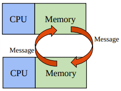

Parallelisation
Contents
Parallelisation¶

import sys
IN_COLAB = 'google.colab' in sys.modules
if IN_COLAB:
%pip install dask[dataframe] ray
What is it?¶
Parallelisation divides a large problem into many smaller ones and solves them simultaneously.
This divides up the time/space complexity.
These divided up tasks are centrally managed by a scheduler.
The work can be split across:
Multiple processes (cores)
A process is the instance of a computer program.
This program is being executed by one or many threads.
Useful for compute-bound problems.
Multiple threads (parts of processes)
A thread of execution is the smallest sequence of programmed instructions.
Useful for memory-bound problems.

Parallelising a Python?¶
Python itself is not designed for massive scalability and controls threads preemptively using the Global Interpreter Lock, GIL.
(The GIL prevents running on mutliple threads simutaneously.)
This has lead many libraries to work around this using C/C++ backends.
Some options include:
multiprocessing for creating a pool of asynchronous workers.
joblib for creating lightweight pipelines that help with embaressingly parallel tasks.
asyncio for concurrent programs, especially ones that are input/output bound.
concurrent.futures for launching parallel tasks.
These options work well for the CPU cores on your machine, though not really beyond that.
Dask¶
Dask has great features, excellent documentation, and a familiar API.
It works through creating and computing task graphs.
Task graphs have nodes (functions) and edges (objects).
For example, the task graph might be:
Embarrassingly parallel (apply one function to many pieces of data independently).
MapReduce (map a function to the data and reduce / summarise the output).

These task graphs are executed by a scheduler.
Note, this is separate to ARC’s scheduler.
The resources used by this scheduler are managed by a cluster.
There are two main types of Dask scheduler which can deploy jobs:
-
Cluster manager:
LocalCluster()Simpler.
For your laptop or a local server.
Test things out here first.
-
Cluster manager:
SGECluster(),SLURMCluster()More complex.
For a cluster on a high performance computer (HPC) (e.g., SGE, SLURM), Kubernetes, or cloud.
Once working correctly on a single machine, move over to distributed.
To simplify things, you can think of the scheduler and the cluster manager as the same thing (i.e., the Dask manager). You then connect to this Dask manager using a client to make workers.

Single machine¶
if not IN_COLAB:
from dask.distributed import Client, LocalCluster
cluster = LocalCluster() # the Dask manager itself
client = Client(cluster) # connecting to this Dask manager to see whats doing
# if not in colab, can render the client and cluster information
client
Client
Client-8be85ddb-9573-11ec-90cf-000d3a23f278
| Connection method: Cluster object | Cluster type: distributed.LocalCluster |
| Dashboard: http://127.0.0.1:8787/status |
Cluster Info
LocalCluster
fa60f021
| Dashboard: http://127.0.0.1:8787/status | Workers: 2 |
| Total threads: 2 | Total memory: 6.78 GiB |
| Status: running | Using processes: True |
Scheduler Info
Scheduler
Scheduler-aec74a99-350a-498e-91c2-437c1780446d
| Comm: tcp://127.0.0.1:35771 | Workers: 2 |
| Dashboard: http://127.0.0.1:8787/status | Total threads: 2 |
| Started: Just now | Total memory: 6.78 GiB |
Workers
Worker: 0
| Comm: tcp://127.0.0.1:46647 | Total threads: 1 |
| Dashboard: http://127.0.0.1:44491/status | Memory: 3.39 GiB |
| Nanny: tcp://127.0.0.1:46311 | |
| Local directory: /home/runner/work/swd6_hpp/swd6_hpp/docs/dask-worker-space/worker-01l9h72r | |
Worker: 1
| Comm: tcp://127.0.0.1:43855 | Total threads: 1 |
| Dashboard: http://127.0.0.1:36389/status | Memory: 3.39 GiB |
| Nanny: tcp://127.0.0.1:38557 | |
| Local directory: /home/runner/work/swd6_hpp/swd6_hpp/docs/dask-worker-space/worker-sdv1gfuv | |
If instead you wanted multiple threads, then could specify this in the Client instance:
client = Client(processes=False, threads_per_worker=4, n_workers=1)
Note (important!), always need to close down the client and cluster at the end:
client.close()
cluster.close()
Applications¶
There are many ways you can use Dask.
For example, there are:
dask.array for NumPy
dask.dataframe for Pandas
dask.bag to iterate over a bag of independent objects (embarrassingly parallel).
And others (see the documentation).
Also, Dask is under the hood for many libraries e.g., xarray, iris, scikit-learn.
Here, out example is going to do some maths on arrays. Don’t worry about what it is. Just focus on the Dask bits.
import numpy as np
import dask.array as da
Warning
Parallelised code often introduces overheads e.g., the Dask manager.
For small jobs, these can take up a large relative portion of the resources, making the job inefficient. Hence, it is worthwhile ensuring that the job is big enough that these overheads are small in comparison. The examples here in this tutorial are on the small side purely for teaching purposes.
x = da.random.random(
(10_000, 10_000, 10),
chunks=(1_000, 1_000, 5))
y = da.random.random(
(10_000, 10_000, 10),
chunks=(1_000, 1_000, 5))
z = (da.arcsin(x) + da.arccos(y)).sum(axis=(1, 2))
No work has happened yet.
All that has been done is that a task graph was created. This contains the future work that we will eventually compute.
So, if I take a look at z, I can see that it will eventually be a NumPy array, but at the moment it is lots of Dask chunks that are lazily loaded.
z
|
The first thing to do is often to take a look at the task graph.
This is done by called the .visualise() method on the Dask object.
This may help find potential bottlenecks.
For example:
z.visualize()
dot: graph is too large for cairo-renderer bitmaps. Scaling by 0.333945 to fit

These can often be too large for the Jupyter cell.
Instead, we can look at the copy saved in this folder under mydask.png.
We can see that this large graph has lots of parallel tasks!
Before we compute anything, it’s helpful to setup Dask’s live dashboard.
Local profiling and diagnostics¶
Many of the profiling tools we looked at earlier don’t work well with parallel code.
Dask provides its own useful tools.
Interactive dashboard¶
The Dask dashboard provides live feedback and diagnostics in many plots and tables using Bokeh.
First, get the Dask dashboard address (normally http://localhost:8787/status):
print(client.dashboard_link)
http://127.0.0.1:8787/status
Either load that link in a browser or copy the address into the Dask Lab Extension.
The Dask Lab Extension should now show all of the client and cluster information.
You can place some of these panels to the right hand side e.g.,:
Task Stream
Progress
Workers
Task Stream
Each row is the activity on a process (core) or thread within the cluster over time.
Each rectangle is one task.
The different colours and different types of work:
Idle (white)
Serialisation (grey)
Communication (red)
Disk input/output (orange)
Other tasks e.g., computation (other colours)

Progress
Progresses from left to right, showing the number of tasks complete and remaining.
Same colours as above, with grey for ready to run, darker colours for data in memory, and lighter colours for complete tasks released from memory.

{kind=link}
Workers
Shows the CPU percentage use (also per worker).
Shows the memory percentage use (also per worker).
Remember, this is Dask’s view of the world, so it may be different to the view from your laptop or HPC.
There is lots of other useful information, such as (video demonstration):
-
Statistical (sampling every 10ms) capture of the call stack from the Dask schedulers perspective.

System
Logs
Individual workers
etc.
Now, when you .compute() the task graph, you can view the progress in these dashboard panels.
result = z.compute()
---------------------------------------------------------------------------
KeyboardInterrupt Traceback (most recent call last)
/tmp/ipykernel_4303/4023212076.py in <module>
----> 1 result = z.compute()
/usr/share/miniconda/envs/swd6_hpp/lib/python3.9/site-packages/dask/base.py in compute(self, **kwargs)
286 dask.base.compute
287 """
--> 288 (result,) = compute(self, traverse=False, **kwargs)
289 return result
290
/usr/share/miniconda/envs/swd6_hpp/lib/python3.9/site-packages/dask/base.py in compute(*args, **kwargs)
568 postcomputes.append(x.__dask_postcompute__())
569
--> 570 results = schedule(dsk, keys, **kwargs)
571 return repack([f(r, *a) for r, (f, a) in zip(results, postcomputes)])
572
/usr/share/miniconda/envs/swd6_hpp/lib/python3.9/site-packages/distributed/client.py in get(self, dsk, keys, workers, allow_other_workers, resources, sync, asynchronous, direct, retries, priority, fifo_timeout, actors, **kwargs)
2691 should_rejoin = False
2692 try:
-> 2693 results = self.gather(packed, asynchronous=asynchronous, direct=direct)
2694 finally:
2695 for f in futures.values():
/usr/share/miniconda/envs/swd6_hpp/lib/python3.9/site-packages/distributed/client.py in gather(self, futures, errors, direct, asynchronous)
1967 else:
1968 local_worker = None
-> 1969 return self.sync(
1970 self._gather,
1971 futures,
/usr/share/miniconda/envs/swd6_hpp/lib/python3.9/site-packages/distributed/client.py in sync(self, func, asynchronous, callback_timeout, *args, **kwargs)
863 return future
864 else:
--> 865 return sync(
866 self.loop, func, *args, callback_timeout=callback_timeout, **kwargs
867 )
/usr/share/miniconda/envs/swd6_hpp/lib/python3.9/site-packages/distributed/utils.py in sync(loop, func, callback_timeout, *args, **kwargs)
322 else:
323 while not e.is_set():
--> 324 e.wait(10)
325 if error[0]:
326 typ, exc, tb = error[0]
/usr/share/miniconda/envs/swd6_hpp/lib/python3.9/threading.py in wait(self, timeout)
572 signaled = self._flag
573 if not signaled:
--> 574 signaled = self._cond.wait(timeout)
575 return signaled
576
/usr/share/miniconda/envs/swd6_hpp/lib/python3.9/threading.py in wait(self, timeout)
314 else:
315 if timeout > 0:
--> 316 gotit = waiter.acquire(True, timeout)
317 else:
318 gotit = waiter.acquire(False)
KeyboardInterrupt:
And now the result is converted to a NumPy array in memory.
type(result)
numpy.ndarray
result
array([156972.19544702, 157145.42170729, 156879.89668583, ...,
157317.92288999, 157301.36203988, 157206.75006937])
Question
What did our Dask Dashboard show?
Hint
Look at the rectangles in the Task Stream.
Solution
Our specific results show us that:
All workers were full with numerical tasks (i.e., no white/red blocks).
This utilises the CPU cores well.
Also, the CPU percentage for the workers increased to ~100 % during the computation.
Exercise
Which is of the 3 examples below is most efficient and why?
Hint
Use %%time.
Example 1
Many, small chunks
x = da.random.random(10_000_000, chunks=(1_000,))
y = x.sum().compute()
Example 2
Fewer, large chunks
x = da.random.random(10_000_000, chunks=(100_000,))
y = x.sum().compute()
Example 3
Use NumPy
x = np.random.random(10_000_000)
y = x.sum()
Solution
Dask introduces overhead to parallelise work (i.e., the scheduler and client).
Hence, Dask is inefficient (i.e., the workers are under-utilised) when doing lots of very small computations.
Consider using fewer, larger chunks to reduce this overhead.
Consider if parallelisation is really needed.
If you want a shareable report of this interactive dashboard, you can use the performance report context manager.
from dask.distributed import performance_report
with performance_report(filename="dask-report.html"):
result = z.compute()
Can then view this performance report here or in a browser:
from IPython.display import display, HTML
display(HTML(filename='dask-report.html'))
This can also be shared with colleagues:
Create a Gist.
Copy the contents of the
dask-report.htmlinto here.Host the file e.g., by providing the
Rawaddress to raw.githack.com.
For example, for this report click here.
Static profilers¶
There are also a range of simpler, static profilers, such as:
Profiler()for task execution.ResourceProfiler()for resource use.CacheProfiler()for scheduler cache.
When you’re happy that everything is correct on a single machine, you can move over to distributed.
Remember, close down the local client and cluster.
if not IN_COLAB:
client.close()
cluster.close()
Distributed¶
Dask-MPI¶
Uses the mpi4py package and MPI to distribute the workers (not communication).
MPI (Message Passing Interface) is where many systems send and receive messages (sometimes containing data) between processes with their own (private) memory.
It’s suitable for problems that require distributed memory. For example, if your computations are mostly generic Python code (i.e., non-numeric) that don’t release the GIL.
MPI is parallelism between nodes (multi-process).

mpi4py provides MPI for Python, allowing Python applications to use multiple processes.
To use MPI in batch jobs, you can specify the number of processes using -pe ib.
For example, for 2 processes:
#$ -pe ib 2
When you need to share memory across chunks, you can use use OpenMP (Open Multi-Processing).
It’s suitable for problems that are mostly numeric (e.g., NumPy and Pandas) that release the GIL entirely.
OpenMP is parallelism within nodes (multi-thread).

To use OpenMP in batch jobs, you can specify the number of threads using -pe smp.
For example, for 2 threads:
#$ -pe smp 2
Submission script¶
First, initialise a Dask MPI session and connect a client to it.
The initialisation launches the Dask Scheduler on MPI rank 0 (first process), the user’s Client code on MPI rank 1 (second process), and the Dask Workers on MPI ranks 2 and above (all the other processes).
So, for 8 processes, there will be 6 workers.
from dask_mpi import initialize
from dask.distributed import Client
initialize()
client = Client()
Then, add in your Dask work.
Here, we’re making the example from earlier bigger.
This increases efficiency, by reducing the relative size of Dask’s overheads (scheduler and client).
Ensure to have the .compute() call within the performance_report context manager to capture the diagnostics.
import dask.array as da
from dask.distributed import performance_report
def example_function():
x = da.random.random(
(100_000, 100_000, 10),
chunks=(10_000, 10_000, 5))
y = da.random.random(
(100_000, 100_000, 10),
chunks=(10_000, 10_000, 5))
z = (da.arcsin(x) + da.arccos(y)).sum(axis=(1, 2))
with performance_report(filename="dask-report_mpi.html"):
result = z.compute()
if __name__ == "__main__":
example_function()
The full script can be found in example_dask_mpi_sge.py.
Batch job¶
First, setup the resource request from the HPC scheduler.
Remember, this is separate to the Dask scheduler.
#!/bin/bash -l
#$ -cwd -V
#$ -l h_rt=01:00:00
#$ -pe smp 8
#$ -l h_vmem=24G
Then, load an MPI module e.g.,:
module load intel openmpi
Warning
Issues can arise from oversubscribing threads.
To avoid this issue, ensure the following environment variables are set within your batch job.
You could also add these to your ~/.bashrc file.
# ensure linear algebra libraries using 1 thread
# https://docs.dask.org/en/stable/array-best-practices.html#avoid-oversubscribing-threads
export OMP_NUM_THREADS=1
export MKL_NUM_THREADS=1
export OPENBLAS_NUM_THREADS=1
Load the conda environment e.g.,:
conda activate swd6_hpp
Ensure that number of cores match in the requested resources at the top and in the mpirun call e.g.,:
#$ -pe smp 8
mpirun -np 8 python example_dask_mpi_sge.py
The full script can be found in example_dask_mpi_sge.bash.
Distributed profiling and diagnostics¶
View the Dask performance report here.
You can see the 6 workers, and the diagnostics look similar to that for the local machine.
Question
How can we check that the job used the CPU cores efficiently?
Solution
After the job has finished, we can find information on the job using qacct -j JOBID, where JOBID is the unique ID for your job.
The result is a large table of information. The important variables here are:
slots 8
ru_wallclock 1102s
cpu 6623.054s
We can calculate the efficiency of the job by dividing how long the cores were computing things (cpu) by the total amount of time they used up (ru_wallclock * slots). This efficiency should be as close to 100 % as possible.
For example:
Efficiency = 100 * cpu / (ru_wallclock * slots)
Efficiency = 100 * 6623 / (1102 * 8)
Efficiency = 75 %
The efficiency here of 75 % is pretty good, though why is this not higher? The Task stream was full with computation the whole time, right?
Well, the reason is because Dask’s scheduler and client are each pinned to their own process. This left only 6 workers for the computation. If we recalculate the efficiency without these 2 processes then the difference is Dask’s overhead:
Efficiency = 100 * 6623 / (1102 * 6)
Efficiency = 100 %
Hence, the worker efficiency was 100 %, while the overall efficiency with Dask’s overheads was 75 %. So, although Dask’s overheads were assigned a compute node each, they didn’t use up much of these resources (i.e., while they were managing the workers).
It would be better if Dask’s overheads were run elsewhere (e.g., the login nodes), so the compute nodes only handled this efficient use of resources.
This alternative does exist. It’s Dask-Jobqueue and we’re exploring that next.
Dask-Jobqueue¶
Dask-Jobqueue supports a variety of resource managers (e.g., SGE, SLURM).
We recommend you use it for batch jobs on the HPC, rather than interactive jobs. Though it does have lots of nice features for interactive work e.g., adaptive dynamic scaling of workers.
Setup the config¶
The example below is for an SGE scheduler (ARC).
The is the default config for a worker. These settings can be overwritten in the Python script when you create the workers.
The full script can be found in ~/.config/dask/jobqueue.yaml.
Here are examples for different HPC systems.
jobqueue:
sge:
name: dask-worker
# Dask worker options
cores: 1 # Total number of cores per job
memory: '1 GB' # Total amount of memory per job
processes: 1 # Number of Python processes per job
interface: ib0 # Network interface to use like eth0 or ib0
death-timeout: 60 # Number of seconds to wait if a worker can not find a scheduler
local-directory: null # Location of fast local storage like /scratch or $TMPDIR
# SGE resource manager options
shebang: "#!/usr/bin/env bash"
queue: null
project: null
walltime: '01:00:00'
extra: []
env-extra: []
job-extra: []
log-directory: null
resource-spec: null
distributed:
worker:
memory:
target: false # dont spill to disk
spill: false # dont spill to disk
pause: 0.80 # pause memory execution at 80% use
terminate: 0.95 # restart the worker at 95% use
Submission script¶
The distributed client and cluster are created within the Python script.
The resource requirements per worker are defined, along with the number of workers.
Here, the scheduler and client run on a separate job to the workers.
This is in contrast to Dask-MPI where all work is in one job for all processes. For Dask-MPI, the scheduler and client get assigned to worker ranks 0 and 1, which reduces the total worker count by 2.
The full script can be found in example_dask_jobqueue_sge.py file.
from dask.distributed import Client
from dask_jobqueue import SGECluster
def setup_client_and_cluster(
number_processes=1, number_jobs=1, walltime="00:01:00", memory=1
):
"""
Setup Dask client and cluster.
Ensure that the number of workers is the right amount
for your job and will be fully utilised.
"""
print("Setting up Dask client and cluster ...")
# number of workers used for number of partitions
number_workers = number_processes * number_jobs
# these are the requirements for a single worker
cluster = SGECluster(
interface="ib0",
walltime=walltime,
memory=f"{memory} G",
resource_spec=f"h_vmem={memory}G",
scheduler_options={"dashboard_address": ":2727"},
job_extra=[
"-V", # export all environment variables
f"-pe smp {number_processes}",
f"-l disk={memory}G",
],
local_directory=os.sep.join([
os.environ.get("PWD"),
"dask-worker-space"]),
)
client = Client(cluster)
cluster.scale(jobs=number_jobs)
print("The resources of each worker are: ")
print(cluster.job_script())
return client, cluster
def main():
client, cluster = setup_client_and_cluster(
number_processes=1,
number_jobs=8,
walltime="01:00:00",
memory=24,
)
print("Main processing ...")
example_function()
print("Finished processing.")
client.close()
cluster.close()
print("Closed client and cluster.")
Batch job¶
We will submit the scheduler and client to the login nodes, and the workers to the compute nodes.
Therefore, this submission script (below) just sets the environment variables, activates conda, and runs Python.
The full script can be found in example_dask_jobqueue_sge.bash.
#!/bin/bash -l
# ensure linear algebra libraries using 1 thread
# https://docs.dask.org/en/stable/array-best-practices.html#avoid-oversubscribing-threads
export OMP_NUM_THREADS=1
export MKL_NUM_THREADS=1
export OPENBLAS_NUM_THREADS=1
conda activate swd6_hpp
python example_dask_jobqueue_sge.py
To run this job on the login node, first ensure that your job is executable:
chmod 700 example_dask_jobqueue_sge.bash
Then you could just execute it:
. example_dask_jobqueue_sge.bash
However, if your session gets disconnected (e.g., if your internet connection drops), then the Dask Scheduler will die too.
To work around this we can use tmux.
tmux creates persistant sessions, which enables the Dask scheduler to persist even if connection is lost.
To use tmux, you first create a new session:
tmux new -s dask_scheduler
Then from within the tmux session, go back to the directory with your script and execute it:
. example_dask_jobqueue_sge.bash
You can detach from a tmux session using CTRL + d.
You can list your tmux sessions using:
tmux ls
You can reattach to your tmux session using:
tmux attach-session -t dask_scheduler
Distributed profiling and diagnostics¶
Similar as for Dask-MPI, you can view the Dask performance report here.
The Dask-Jobqueue method create and schedules the workers within the Python script. This additional overhead takes extra time relative to Dask-MPI.
The other difference is that here for Dask-Jobqueue, all 8 requested workers were used directly on the computation.
Question
How well did this job use the resources?
Solution
Instead of one big job with all the workers (as for Dask-MPI), Dask-Jobqueue submits individual workers.
Similar to before (i.e., using qacct -j JOBID), we can check the efficiency of each of these individually.
The results for each worker are:
slots 1
ru_wallclock 967
cpu 930.130s
Hence, the efficiency of each worker is:
Efficiency = 100 * cpu / (ru_wallclock * slots)
Efficiency = 100 * 930 / (967 * 1)
Efficiency = 96 %
This is a nice use of HPC resources.
Other general features¶
Functions become Tasks¶
if not IN_COLAB:
from dask.distributed import Client
client = Client()
def double(x):
return x * 2
double(5)
10
Submitting this function (task) to the client, runs it in a background thread or process:
future = client.submit(double, 10)
future
Return the result of this future object using .result():
future.result()
20
You can also map a function (task) to many inputs using Dask Bags.
Dask Bags allow operations like map, filter, fold, and groupby on collections of generic Python objects.
import dask.bag as db
You can create Dask Bags from a sequence, reading from files, or from delayed objects.
bag = db.from_sequence(range(10))
bag
dask.bag<from_sequence, npartitions=10>
doubled_bag = bag.map(double)
doubled_bag
dask.bag<double, npartitions=10>
As earlier, call .compute() to execute the computation (i.e., the mapped function):
doubled_bag.compute()
[0, 2, 4, 6, 8, 10, 12, 14, 16, 18]
Classes become Actors¶
Actors enable stateful computations.
They are pointers to remote objects.
You can call methods on these remote objects.
class Counter:
""" A simple class to manage an incrementing counter """
n = 0
def __init__(self):
self.n = 0
def increment(self):
self.n += 1
return self.n
def read(self):
return self.n
Create an actor on a worker using the actor=True keyword argument:
future = client.submit(Counter, actor=True)
Get back a pointer to that object:
counter = future.result()
counter
<Actor: Counter, key=Counter-46c54489-07c0-4ea7-a483-e7ad308fb490>
Then call the remote method on that pointer:
future = counter.increment()
future
<ActorFuture>
And return the result:
future.result()
1
if not IN_COLAB:
client.close()
Ray¶
Another great library for parallel computing in Python is Ray.
Ray provides a simple, universal API for building distributed applications.
Ray will automatically detect the available GPUs and CPUs on the machine.
You can also specify required resources.
First, initialise Ray.
import ray
ray.init()
E0223 12:17:16.772356803 1448918 fork_posix.cc:70] Fork support is only compatible with the epoll1 and poll polling strategies
E0223 12:17:16.788153154 1448918 fork_posix.cc:70] Fork support is only compatible with the epoll1 and poll polling strategies
E0223 12:17:16.802786184 1448918 fork_posix.cc:70] Fork support is only compatible with the epoll1 and poll polling strategies
{'node_ip_address': '192.168.0.37',
'raylet_ip_address': '192.168.0.37',
'redis_address': '192.168.0.37:6379',
'object_store_address': '/tmp/ray/session_2022-02-23_12-17-15_720539_1448918/sockets/plasma_store',
'raylet_socket_name': '/tmp/ray/session_2022-02-23_12-17-15_720539_1448918/sockets/raylet',
'webui_url': None,
'session_dir': '/tmp/ray/session_2022-02-23_12-17-15_720539_1448918',
'metrics_export_port': 62382,
'gcs_address': '192.168.0.37:34715',
'node_id': '4d21aede9f229f6bdb2f6b855154c1a4e59c08c5cef1d49bace81e9f'}
Ray has many great features, similar to Dask.
This includes:
Functions (tasks) in Ray¶
Parallelise functions by adding @ray.remote decorator.
@ray.remote
def increment(x):
return x + 1
Then instead of calling it normally, use the .remote() method.
futures = [increment.remote(x) for x in range(4)]
This yields a future object reference that you can retrieve with ray.get(object).
print(ray.get(futures))
[1, 2, 3, 4]
Classes (actors) in Ray¶
Classes (actors) are parallelised in the same way as functions (tasks) in Ray i.e., by using the @ray.remote decorator:
@ray.remote
class Counter:
""" A simple class to manage an incrementing counter """
def __init__(self):
self.n = 0
def increment(self):
self.n += 1
return self.n
def read(self):
return self.n
Similar to before, construct an actor instance using .remote()
counters = [Counter.remote() for i in range(4)]
On each actor, call remote methods (increment and read), and get the future objects
[counter.increment.remote() for counter in counters]
futures = [counter.read.remote() for counter in counters]
print(ray.get(futures))
[1, 1, 1, 1]
When finished, remember to shut down the Ray connection.
ray.shutdown()
Other key features of Ray:
And much more (see the great documentation).
Bodo¶
Bodo is a new inferential JIT compiler that automatically parallelises code.
It also uses LLVM, similar to Numba.
It does this by inferring which data structures and computations can be distributed based on the program.
Bodo works well for scaling and speeding up numerical code like NumPy and Pandas.
It works via the @bodo.jit decorator.
Bodo uses Numba for compiling regular Python features.
Jupyter Notebooks¶
It can be run within Jupyter Notebooks, which we’ll look at here.
To run in a notebook first, start the cluster and connect a client to it:
import ipyparallel as ipp
import psutil
rc = ipp.Cluster(
engines='mpi',
n=4 # the number of workers
).start_and_connect_sync(activate=True)
E0224 10:12:07.265031824 1541225 fork_posix.cc:70] Fork support is only compatible with the epoll1 and poll polling strategies
Starting 4 engines with <class 'ipyparallel.cluster.launcher.MPIEngineSetLauncher'>
E0224 10:12:08.276139115 1541225 fork_posix.cc:70] Fork support is only compatible with the epoll1 and poll polling strategies
Verify the cluster is setup okay.
Now you can start using the parallel magic commands, such as %%px to send parallel code to these workers.
Note, that these cells run away from the main kernel, so you’ll need to import libraries that you want to use within them.
%%px
import bodo
print(f"Hello World from rank {bodo.get_rank()}. Total ranks={bodo.get_size()}")
[stdout:1] Hello World from rank 1. Total ranks=4
[stdout:3] Hello World from rank 3. Total ranks=4
[stdout:2] Hello World from rank 2. Total ranks=4
[stdout:0] Hello World from rank 0. Total ranks=4
This should have returned something like:
Hello World from rank 0. Total ranks=N
Hello World from rank 1. Total ranks=N
...
Hello World from rank N-1. Total ranks=N
Okay, so now we can run an example.
This is for some numerical code using NumPy and Pandas.
Don’t worry about what the function does exactly, just focus on the @bodo.jit decorator.
First, let’s try this on a single core without Bodo:
import time
import numpy as np
def example_function():
start_time = time.time()
x = np.random.randn(10_000, 10_000, 1)
y = np.random.randn(10_000, 10_000, 1)
z = (np.sin(x) + np.cos(y)).sum()
end_time = time.time()
print(f'Execution time: {end_time - start_time:.1f} seconds')
print(z)
example_function()
Execution time: 7.9 seconds
60656617.72448057
And now let’s try with Bodo:
%%px
import time
import bodo
import numpy as np
@bodo.jit
def example_function():
start_time = time.time()
x = np.random.randn(10_000, 10_000, 1)
y = np.random.randn(10_000, 10_000, 1)
z = (np.sin(x) + np.cos(y)).sum()
end_time = time.time()
print(f'Execution time: {end_time - start_time:.1f} seconds')
print(z)
example_function()
[stdout:0] Execution time: 4.3 seconds
60650723.33030673
Here, the work was distributed across the 4 workers and the result was combined at the end and returned.
We can see that with Bodo, the function run quite a bit faster.
Each worker executes the same single program (i.e., using Single Program Multiple Data).
Caution, as this model uses multiple data, then each worker has a copy of all the data.
So, for this example using 8 workers the total memory useage is:
x = np.random.randn(10_000, 10_000, 1)
y = np.random.randn(10_000, 10_000, 1)
x_size_gb = x.nbytes / 1e+9
y_size_gb = y.nbytes / 1e+9
number_of_workers = 8
total_memory = (x_size_gb + y_size_gb) * number_of_workers
print(f'The total memory used for this call is {total_memory} GB')
The total memory used for this call is 12.8 GB
If you go on to use MPI, ensure that the submission script has enough memory.
Diagnostics¶
The distributions found by Bodo can be printed by calling distributed_diagnostics() on the compiled function.
Here, 1D_Block means distributed.
The data could also be replicated (REP).
%%px
example_function.distributed_diagnostics()
[stdout:0] Distributed diagnostics for function example_function, /tmp/ipykernel_1541261/91600033.py (4)
Data distributions:
x 1D_Block
y 1D_Block
Parfor distributions:
54 1D_Block
Distributed listing for function example_function, /tmp/ipykernel_1541261/91600033.py (4)
----------------------------------------------| parfor_id/variable: distribution
@bodo.jit |
def example_function(): |
x = np.random.randn(10_000, 10_000, 1)----| #54: 1D_Block, x: 1D_Block
y = np.random.randn(10_000, 10_000, 1)----| y: 1D_Block
z = (np.sin(x) + np.cos(y)).sum() |
return z |
Remember, shut down the cluster when you’re finished.
rc.close()
MPI¶
After you’ve tested your code locally, you can move over to using Bodo on the HPC Python scripts in batch mode.
For example, using 8 cores:
mpiexec -n 8 python example_bodo_mpi_sge.py
Note, mpiexe -n is interchangable with mpirun -np.
Warning
Issues can arise from processes pinning to one core.
To avoid this issue, ensure the following environment variables are set within your batch job.
You could also add this to your ~/.bashrc file.
# stop processes pinning to one core
unset GOMP_CPU_AFFINITY
The full Python script is in example_bodo_mpi_sge.py.
The full submission job is in example_bodo_mpi_sge.bash.
Remember, to request enough memory (i.e., for this example > 13 GB).
Question
How well did this job use the resources (using the qacct information below)?
$ qacct -j 3524073
==============================================================
qname feps-cpu.q
hostname d9s9b4.arc4.leeds.ac.uk
group EAR
owner earlacoa
project feps-cpu
department defaultdepartment
jobname example_bodo_mpi_sge.bash
jobnumber 3524073
taskid undefined
account sge
priority 0
qsub_time Thu Feb 24 12:48:24 2022
start_time Thu Feb 24 12:48:34 2022
end_time Thu Feb 24 12:48:55 2022
granted_pe smp
slots 8
failed 0
exit_status 0
ru_wallclock 21s
ru_utime 139.030s
ru_stime 7.635s
ru_maxrss 1.687MB
ru_ixrss 0.000B
ru_ismrss 0.000B
ru_idrss 0.000B
ru_isrss 0.000B
ru_minflt 764941
ru_majflt 2
ru_nswap 0
ru_inblock 0
ru_oublock 80
ru_msgsnd 0
ru_msgrcv 0
ru_nsignals 0
ru_nvcsw 38884
ru_nivcsw 665
cpu 146.665s
mem 112.727GBs
io 166.518MB
iow 0.000s
maxvmem 12.973GB
arid undefined
ar_sub_time undefined
category -U admiralty,feps-cpu,feps-gpu -l env=centos7,h_rt=600,h_vmem=24G,node_type=40core-192G,project=feps-cpu -pe smp 8
Solution
qacct tells us that:
slots 8
ru_wallclock 21s
cpu 146.665s
Hence, the efficiency is:
Efficiency = 100 * cpu / (ru_wallclock * slots)
Efficiency = 100 * 147 / (21 * 8)
Efficiency = 88 %
Not too bad.
Bodo has helpful documentation for more information, for example, covering:
Exercise¶
…
Key Points
Use Dask/Ray/Bodo to parallelise your numerical work.
Test locally first before moving to a distributed machine, ensuring that the code is parallelising correctly.
Use diagnostics to understand your parallel code (e.g., Dask’s dashboard,
qacct).
Further information¶
Useful resources¶
Good practises¶
Start small.
Test out ideas locally first, on laptop (or other single machine).
Avoid very large chunks / partitions / task graphs (a good first option is to allow auto-chunking).
Only use parallelisation (e.g., Dask) when needed, then move back to normal Python ( / NumPy / Pandas).
Persist data in memory (RAM) where can, as faster than accessing from disk.
Load data with the parallel library (e.g., Dask), rather than just passing data to it to manage.
Call compute once, on lots of computations.
Avoid global state.
Don’t modify the data in place.
Avoid moving large pieces of data around (i.e., bring analysis to the data on the cluster).
More information:
Other options¶
-
Use Ray as a backend for Dask tasks.
Dask dispatches tasks to Ray for scheduling and execution.
-
Swap out the library import and use the same API.
Uses Ray or Dask to easily speed up your Pandas code.
To use Modin, simply replace the import and use Pandas API as normal.
-
A tensor-based unified framework for large-scale data computation which scales numpy, pandas, scikit-learn and many other libraries.
Swap out the library import, use the same API, and add
.execute().Mars Tensor for NumPy.
Mars DataFrame for Pandas.
Mars can also use Ray as the backend (instructions).
-
Fast DataFrame library for Rust and Python.
-
Combines your Spark and Ray clusters, making it easy to do large scale data processing using the PySpark API and seemlessly use that data to train your models using TensorFlow and PyTorch.
-
For stateful remote control of several running ipython sessions.
-
For batch processing using MapReduce from Hadoop.
-
For using Apache Spark in Python, an all-in-one MapShuffleReduce system.
-
For real-time streaming of data using Apache Storm.
Resources¶
Concurrency can also run different tasks together, but work is not done at the same time (concurrency from the ground up).
Asynchronous (multi-threading), useful for massive scaling, threads controlled explicitly.